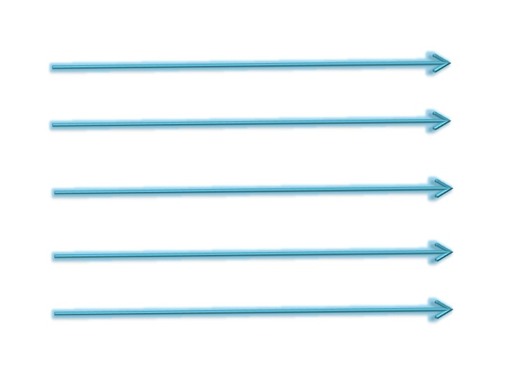
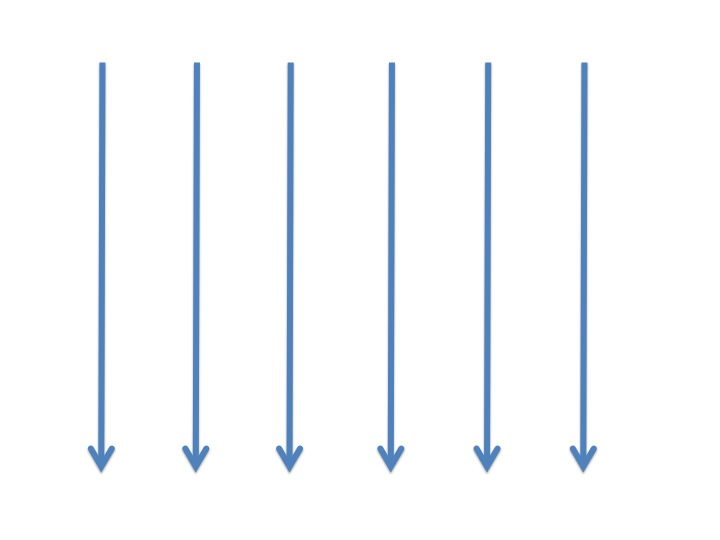
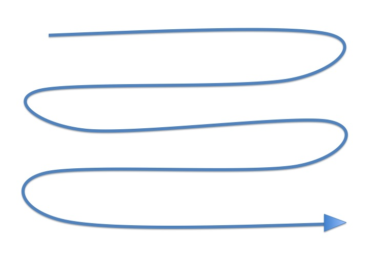
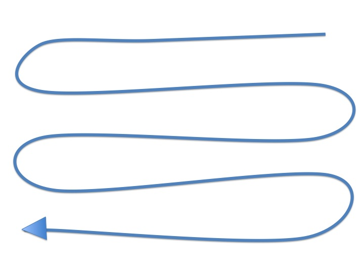
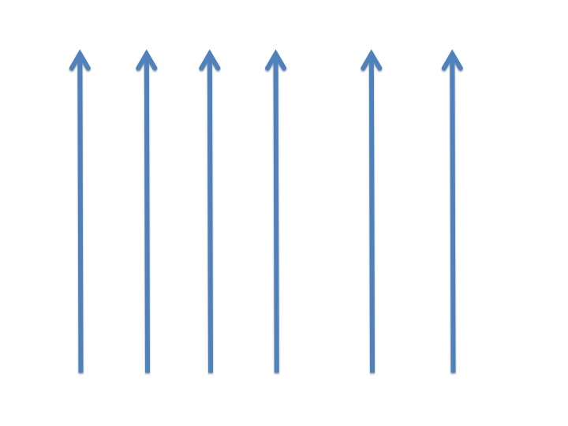
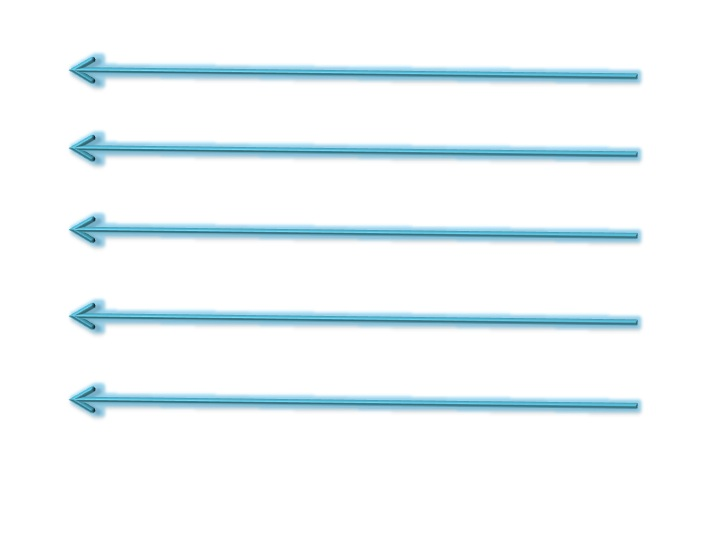
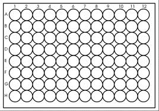

{% extends "base_template.html" %} 

{% block title %}Project List{% endblock title %}

{% block active-navbar %} 
<li><a href="index">Home</a></li>
<li><a href="about">About</a></li>
<li><a href="contact">Contact</a></li>
<li><a href="project-list">Project List</a></li>
{% endblock active-navbar %}

{% block content %}

{% block section_title %}<h1>Welcome Collaborator Bob Smith </h1>{% endblock %}
<br />
<h4> Please verify below that this is the Project you are recording for </h4>
Manifest Name: Manifest_1369 <br />
No. Plate: 1 <br />
Study: 2019STDY <br />
Supplier: Sanger Centre <br />
<br />

<a href="project-list" role="button" class="btn"> Back to Project List </a>
<a href="#myModal" role="button" class="btn" data-toggle="modal"> Start Well-Filling! </a>

<!-- Modal -->
<div id="myModal" class="modal hide fade" tabindex="-1" role="dialog" aria-labelledby="myModalLabel" aria-hidden="true">
	<div class="modal-header">
		<button type="button" class="close" data-dismiss="modal" aria-hidden="true">×</button>
		<h3 id="myModalLabel">Choose the Method that the wells will be filled: </h3>
	</div>
	<div class="modal-body">
		<a href="#manual" class="btn btn-primary pull-left"> Manual </a>
		<div id="manual" class="modal hide fade" tabindex="-1" role="dialog" aria-labelledby="myModalLabel" aria-hidden="true"></div>

		<a href="#" class="btn btn-info pull-right"> Robot </a>
		<br />
		<br />


		<!-- IF THEY PICKED MANUAL, need to implement refreshing the modal page to get here. -->

		<h4> Choose a Style you would use to work in: </h4>
		<table>
			<tr>
				<td>  </td>
				<td>  </td>
				<td>  </td>
			</tr>
			<tr>
				<td>  </td>
				<td>  </td>
				<td>  </td>
			</tr>
		</table>

		<a href="#manual" class="btn btn-primary pull-right"> Customize </a>
		<br />
		<br />

		<!-- Customize ordering -->
		<h4> Customize the order of the wells being filled </h4>
		<div class="pagination-centered"></div>
		<br />
		<br />

		<!-- AFTER SELECTING A STYLE, WE GO TO THE SCREEN WHERE THEY INPUT THE PHENOTYPES AND SUPPLIER SAMPLE NAME -->
		<h4> Please fill in the fields for the prompted sample </h4>

		<div class="pagination-centered"></div>
		<br />
		
		Sanger Plate ID: DN264987V <br />
		Sanger Sample ID: 2019STDY5449138 <br />
		Supplier Sample Name: <input type="text"> <br />
		<br />

		<h4>Phenotypes required for the inputted sample: </h4><br />
		Cohort: <input type="text"> <br />
		Volume (ul): <input type="text"> <br />
		Concentration (ng/ul): <input type="text"> <br />


		<!-- STILL NEED TO IMPLEMENT THIS AUTO-SAVE FEATURE -->
		* The fields will autosave * <br /> 
		<br />
		<div class="pull-right">
			<a href="#" class="btn btn-info"> Reset </a>
			<a href="#" class="btn btn-primary"> Save </a> <!-- best if autosave, but can explicitly save as well -->
			<a href="#" class="btn btn-success"> Next </a>
			<a href="#" class="btn"> Cancel </a>
		</div>

		
  	</div>


  	<div class="modal-footer">
    	<button class="btn" data-dismiss="modal" aria-hidden="true">Close</button>
  	</div>
</div>


<br />
<br />
{% endblock content %}